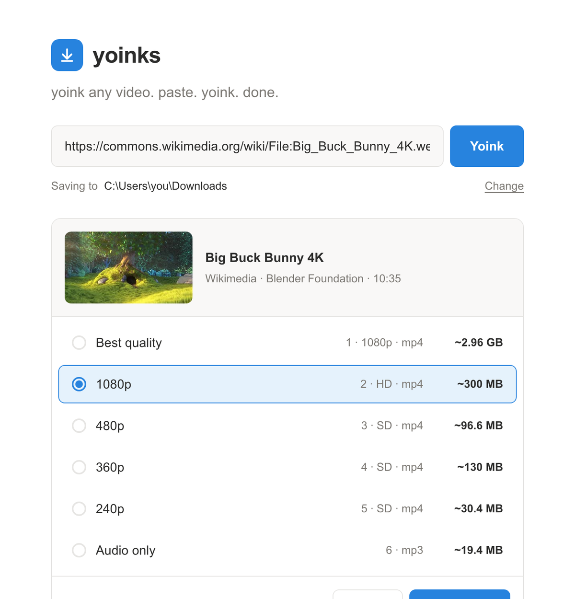
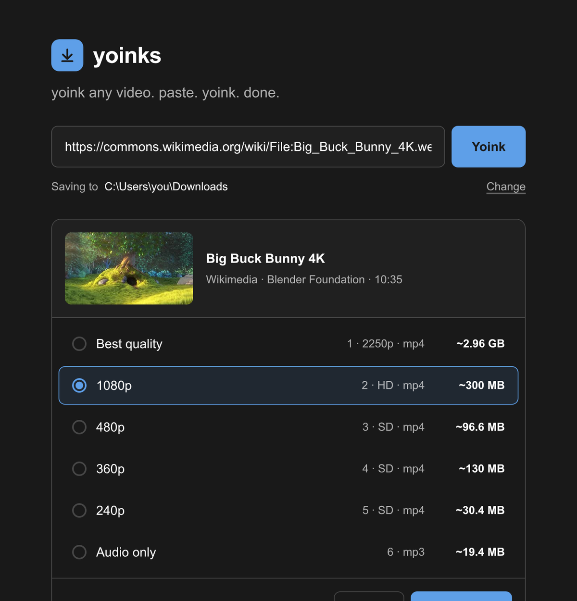

Windows 10 and 11
- Installer (.exe) ~133 MB
- Portable, no install ~133 MB
- Run the installer.
- If you see "Windows protected your PC", click More info, then Run anyway.
Free video downloader for Windows, macOS and Linux
Paste a link from YouTube, TikTok, Instagram or X, see every quality with its file size, and save it as MP4 or MP3.


Use the Share or Copy link button in the YouTube, TikTok or Instagram app, or copy the address from your browser.
Paste with Ctrl+V (Cmd+V on a Mac) and press Enter. If yoinks spots a link on your clipboard, it offers to use it, so you only click once.
Each row shows the resolution and the file size. Use the arrow keys or click, then press Download.
Watch the progress, speed and time left. When it finishes, click Open to play it or Show in folder to find it.
Why the size matters
These are the sizes yoinks showed for Big Buck Bunny 4K, a 10 minute 35 second film. The best version is 2.96 GB. The 1080p one looks almost the same on a laptop and is a tenth of that.
Notice 360p is bigger than 480p. That file uses an older codec, which needs more data for a smaller picture. You can't tell from the resolution alone, so yoinks puts the size on every row.
An hour-long class from YouTube, small enough for a phone or tablet.
A backup of what you posted, in case an account gets locked or a post disappears.
Podcasts, interviews and live sets, ready for your music player.
Footage you have permission to use, saved as MP4 so CapCut, Premiere or DaVinci Resolve open it straight away.
Percent, speed and time left update while the file downloads, on Windows as well as Mac and Linux.
Copy a link anywhere, switch to yoinks, and it asks if you want that one.
YouTube serves high quality video and sound as separate files. yoinks joins them into one MP4 with ffmpeg.
Enter to fetch, arrow keys to pick, Esc to go back. You never need the mouse.
Sites change often. yoinks updates yt-dlp, the engine inside it, so links keep working.
Save to Downloads or any folder you choose, in a light or dark window.
Websites are handy for one quick clip. For anything regular, an app on your computer is calmer and keeps your links private.
| Feature | yoinks | Typical downloader website |
|---|---|---|
| File size before you download | On every option | Rarely shown |
| Ads and pop-ups | None | Common, sometimes fake download buttons |
| Highest quality | Whatever the site offers, up to 4K and above | Often limited to 720p or 1080p |
| Where the work happens | On your computer | On their server, which sees every link you paste |
| Works with | About 1,800 sites | Usually one or a few |
| Cost | Free, open source | Free with ads, or a paid plan |
Works with YouTube, TikTok, Instagram, X, Facebook, Reddit, Twitch, SoundCloud, Dailymotion and about 1,800 other sites.
The list comes from yt-dlp. See every supported site
Version 1.1.1. GitHub Actions builds every file straight from the public code.
xattr -cr /Applications/yoinks.app in Terminal.chmod +x yoinks*.AppImage, then open it.sudo apt install ./yoinks*.deb.A downloader asks for a lot of trust, so every line of yoinks is public. It is a friendly window around two well known free tools: yt-dlp, which finds and downloads the video, and ffmpeg, which joins and converts the files. The app has no analytics and sends nothing about you anywhere.
Yes. It is open source under the MIT license, with no ads, no account and no paid version.
The app isn't code-signed yet. Signing certificates cost money every year, so the system shows a warning for any unsigned app. The install steps above show how to open it. You can read the code and see how GitHub builds each file before you decide.
Video saves as MP4, which plays on almost every phone, TV and editor. Audio only saves as MP3 at the highest quality the source allows.
Not yet. yoinks downloads one video per link. If you paste a link to a video inside a playlist, it saves just that video.
Not as a ready download yet. The macOS build is for Apple Silicon (M1 and newer). On an Intel Mac you can build it from the source code with Node.js by following the README.
YouTube sometimes blocks downloads from internet connections it thinks are automated. The block comes from YouTube, usually clears after a while, and doesn't affect other sites.
It depends on the video and where you live. Download your own uploads, public domain and Creative Commons videos, or anything the owner lets you keep. yoinks doesn't break DRM, so Netflix and other paid streaming services won't work.